Übungs-CDs & Musik
Original-Yogatraining zum Mitüben zu Hause – aufgenommen von Leo Danter (Mahaleo Dantananda), teils gemeinsam mit Irene Danter.
Die Übungs-CDs
Die Reihe begleitet den Kursaufbau vom Anfänger bis zum Yoga-Master. Sieben dieser CDs sind Teil der Unterlagen in der Ausbildung. Fragen Sie in der Kursstunde oder telefonisch unter 0677 990 25 400 nach.
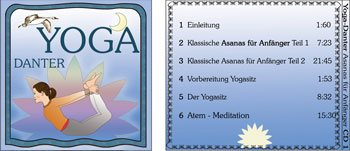
CD I · Asanas für AnfängerKlassische Asanas, Vorbereitung Yogasitz, Atem-Meditation 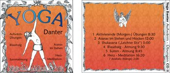
CD II · Aufwärm-ÜbungenAktivierende Übungen, Blasebalg- und Summ-Atmung, Herz-Meditation 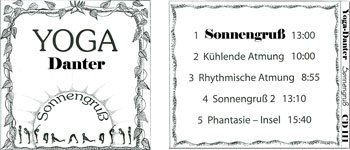
CD III · SonnengrußSonnengruß, kühlende und rhythmische Atmung 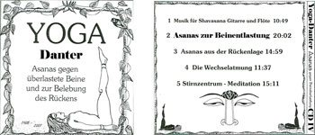
CD IV · Asanas zur BeinentlastungGegen überlastete Beine und zur Belebung des Rückens 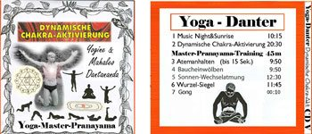
CD V · Dynamische Chakra-Aktivierungmit Master-Pranayama-Training 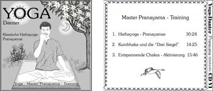
CD VI · Master-Pranayama-TrainingKlassische Hatha-Yoga-Pranayamas, Kumbhaka und die „Drei Siegel“ 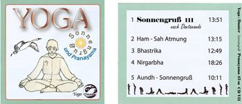
CD VII · Sonnengruß und PranayamaHam-Sah-Atmung, Bhastrika, Nirgarbha 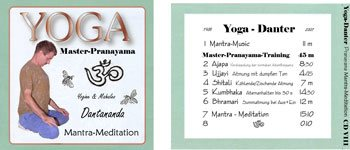
CD VIII · Mantra-MeditationMaster-Pranayama-Training mit Ujjayi, Shitali und Bhramari 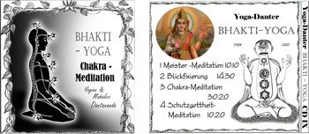
CD IX · Bhakti-YogaChakra-Meditation, Blickfixierung, Schutzgottheit-Meditation 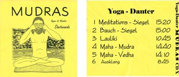
CD X · MudrasMeditations- und Bauch-Siegel, Lauliki, Maha-Mudra, Maha-Vedha 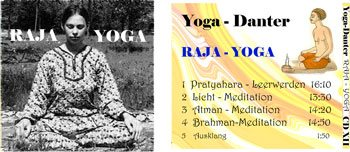
CD XII · Raja-YogaPratyahara, Licht-, Atman- und Brahman-Meditation 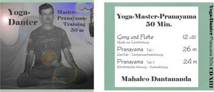
CD XIII · Yoga-Master-Pranayama50 Minuten Ham-Sah-, Sonnenwechsel- und rhythmische Atmung 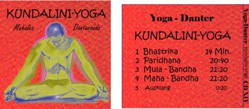
CD XIV · Kundalini-YogaBhastrika, Paridhana, Mula- und Maha-Bandha 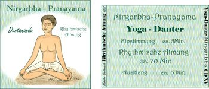
CD XV · Nirgarbha-PranayamaRhythmische Atmung, ca. 70 Minuten
Entspannung, Atem & Tibeter
Die Kunst des EntspannensLotos-Übungen, Positives Denken, Integrale Entspannung 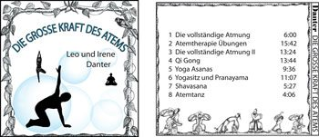
Die große Kraft des AtemsVollständige Atmung, Atemtherapie, Qi Gong, Atemtanz 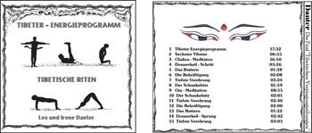
Tibetische RitenDas Tibeter-Energieprogramm
Musik-CDs
Übungsprogramme mit Musik, erschienen in der Reihe „Viva – Fit ’n’ Fun“ bzw. „Body Balance“, jeweils mit Anleitung auf Deutsch und Englisch.
YogaFitness durch innere Ruhe 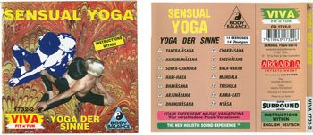
Sensual YogaYoga der Sinne 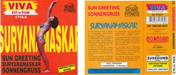
SuryanamaskarSonnengruß 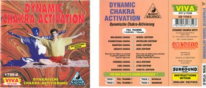
Dynamic Chakra ActivationDynamische Chakra-Aktivierung 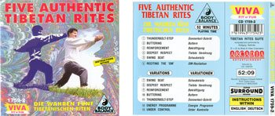
Five Authentic Tibetan RitesDie wahren fünf tibetischen Riten 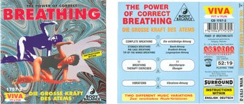
The Power of Correct BreathingDie große Kraft des Atems I GingSpiel der Elemente TaoTao der Gesundheit 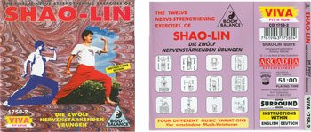
Shao-LinDie zwölf nervenstärkenden Übungen
Übungsblätter
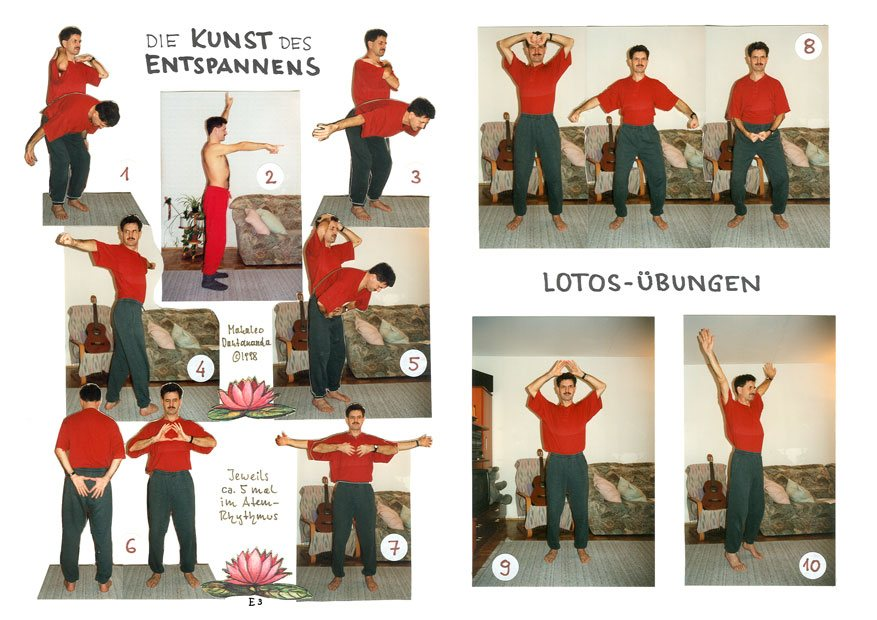
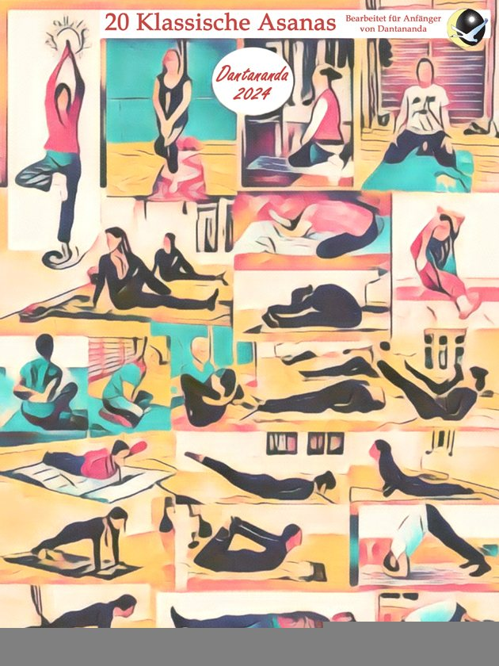